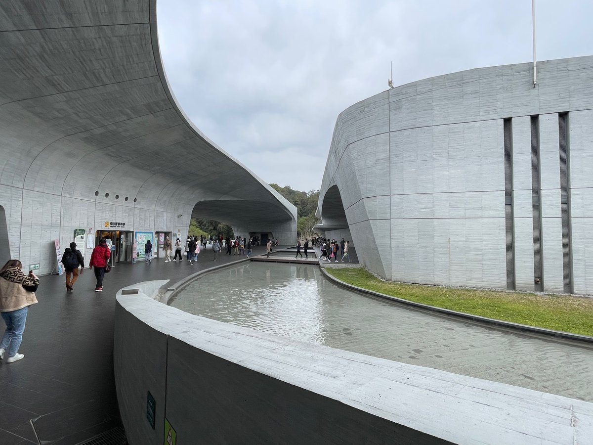
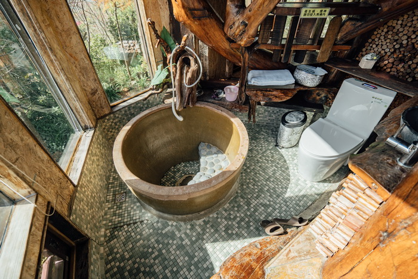

SUN MOON LAKE · 日月潭
THE COLLECTION / 旅行足跡
01 趟旅行一起出發的日子

2026 · 雙十假期2026.10.08 — 10.11
南投四天三夜，
雙十旅行地圖
埔里 → 日月潭 → 清境
第一晚住城堡，第二晚看湖，
第三晚到山上住樹屋。
4 天 3 夜自駕旅行湖景與山景
打開這趟旅行
下一次的目的地，留給下一次的期待。
新的旅行，也會慢慢收進這裡。


2026 · 雙十假期第一晚住城堡，第二晚看湖，
第三晚到山上住樹屋。
下一次的目的地，留給下一次的期待。
新的旅行，也會慢慢收進這裡。